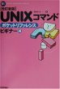

2005-01-31 月曜日 編集
■ SL-CT510
ずっと買いたかったが慢性的な金欠で買えないでいたmp3プレイヤーを買った。
mp3プレイヤーと言っても最近流行のシリコンオーディオプレイヤーではなく、mp3再生機能が付いたポータブルCDプレイヤーで、パナソニックの SL-CT510。
地元のエイデンで、展示品のみで 7980円だった。後から価格.com を調べてみたところ 8,180円だった。エイデンのカードサービスで 5年保障が付くので、7980円は十分安く買ったと思って良いだろう。
現在も金欠ではあるが、2月5、6日に自動車で東京ディズニーシーに行く時に、帰りの運転中に大きな音で音楽を聴きたかったので買った。元々欲しかったものではあったし。
2005-01-29 土曜日 編集
■ ポケットリファレンス
会社では FreeBSD を使って開発を行っている。
それゆえシェルコマンドの使い方をちょっと調べたいと言うことが度々ある。
普段使っているのが、技術評論社の「FreeBSDコマンドポケットリファレンス」。
ちょっと調べたい時は、web を検索するよりもこう言った書籍の方が使いやすかったりする。
大学の頃は、大学の環境が UNIX だったので、「UNIXコマンドポケットリファレンス ビギナー編」を使っていた。
これは、会社に入った後も「FreeBSDコマンドポケットリファレンス」を買うまで使っていた。今も会社の引き出しの中にある。
「UNIXコマンドポケットリファレンス ビギナー編」は、改訂版が出ているみたい。

改訂新版 UNIXコマンドポケットリファレンス ビギナー編
それで、今回ちと欲しいのが、「WindowsXP/2000コマンドプロンプトポケットリファレンス」と「CGI&Perlポケットリファレンス」と「Excel VBAポケットリファレンス―Excel97/2000/2002/2003対応」。
Windowsのコマンドリファレンスは、最初書店で見かけたときは、「これはいらないなあ」と思ったが、LAN 関連で弄ったりする時に route とか ipconfig とか arp とか tracert とか ping とかの仕様をちょこっと調べたいことが意外と多い。
perl は、web や大きなプログラムではなく、シェルコマンドでは対応できないような文字操作を行いたい時にたまに使う。使い慣れた言語ではないのでリファレンス本が欲しい。
Excel も、たま〜に使うだけなので、逆に簡単な関数すらわからないので、リファレンス本が欲しい。
取り敢えず書店で内容をじっくり見てみよう。
2005-01-25 火曜日 編集
■ 田舎と都会
「田舎だから〜」「都会だから〜」といった言い方はあまり好きではない。
私は、どちらかと言うと"田舎"と言われる方に住んでいるのだが、田舎であることに劣等感を感じている、、、のではなくて感じて"いない"から嫌なのだ。
どういう事かと言うと、"都会好き"な人で勘違いしている人が多いから。
都会好きで都会に住んでいる人って、"田舎よりも都会の方が上"と勘違いしている人が多いような気がする。
さらには、"田舎よりも都会が上"を、"田舎の人よりも都会の人の方が上"とまで勘違いしている人がいる気がする。
こっちがなんとも思っていないのに「田舎なんかに住んでいて」みたく下に見られるととても気分が悪い。こっちはむしろ都会には住みたくないのに。
田舎が嫌で嫌で都会に行きたくて仕方が無くて、田舎に劣等感を感じているのならまだ良いが、劣等感を感じて"いない"から余計に嫌なのです。
あと、田舎で方で嫌なこと不便なことがあると即座に「田舎だから」、都会で良いこと便利なことがあると即座に「都会だから」と言うのも嫌だなあ。
こう言っている内の半分以上は田舎/都会とは関係の無いことだったりするんだよね。
2005-01-24 月曜日 編集
■ スマートIC
既存のSA/PA等にETC専用の出入り口を作ると言う試み。
本線に新しくICをつくりよりも、安全面の検討もそれほど必要なく、設置にかかる費用もかからないと言うことだろう。
それは、良いとして目に付いたのが、「通信エラー、ＥＴＣカード未挿入などにより通信できず開閉バーが開かなかった場合、車線にある押しボタンを押してください。再度通信します。」とある。この、ボタンを押して再度通信をする機能って普通のICのETCには付けないのかなあ。現在は、カード入れ忘れなどによりETCゲートを通過できなかった場合は、係員が来るのを待つしかない。これは、利用者も係員も結構迷惑だと思うんだよね。この機能は通常のETCゲートにも付けて欲しい。
既に、通常のETCゲートで実装済みだったらごめんなさい。
あと、もう一つは「ETC専用だがノンストップで通行できない」と言う部分。
これは、実験中だからなのかなあ。
普段猛スピードでETCゲートを通過している人はご注意を。
ETC関連の話題で聞いた噂。
ETCは元々道路の通行料金のみではなく、ガソリンスタンドの支払いなどなどに拡張することを目標にしている。
が、聞いた噂だと既存の車載機では対応できず、買い換える必要があるのだという。
この噂が本当だとしたらちと腹立たしい。
元々構想がないところから仕様が拡張されたのならわかるが、色々な方面に拡張されることは最初から構想されていたこと、「買い換えてください」だけで済まされたら既存ユーザーは怒り爆発だ。
2005-01-23 日曜日 編集
去年、ディズニーシーに行ったときに買った時計が、今年の1月2日3日にディズニーランドに行ったときに、壊れてしまった。
踏み潰した等ではなく、気がついたら止まっていたので電池切れだと思い、自宅に戻った後電池交換に出したところ、電池交換だけでは動かず、故障の可能性があると言われた。
そう言えば、まだ買ってから1年経っていないと思い、保証書を調べたところ、1月31日から1年間の保障となっていた。
ギリギリ間に合ったと思い、サポートセンターに電話、修理の手続きをした。
修理の手順は、着払いでディズニーに送り、修理されて戻ってくるはず。
大体2、3ヶ月かかるそうで、ちょっと時間がかかるのは不満だが、まあ、よしとするか。
保障期間内に壊れてくれて良かった・・・。
# 夕月＠ディズニーハマリ中 『早く戻ってくるといいね〜（＾＾；』
2005-01-21 金曜日 編集
■ ヤフー
史上最悪の個人情報漏洩事件をやらかしたヤフー!この記憶が覚めやらぬままこんなニュースが、
ヤフー、クレジットカード事業に参入〜業務は日本信販にアウトソーシング
う〜ん、恐い((((((;゜Д゜))))
2005-01-20 木曜日 編集
■ はてなダイアリーデザイン
はてなダイアリーのデザインを変更してみた。
左側には自分の写真を載せてみたりなんかして。
ついでに前にちょっと興味を持ったはてなアンテナを触ってみた。
これって早い話 WWWC の機能ってことかな?
ふ〜む、WWWC に登録してある項目を入れてみてよさげだったらこっちに移行しようかな。
はてなアンテナに URL を追加しようとすると、その時点でそのページがはてなアンテナに登録されている数が表示される。
試しにゲーム会社リンク集の http://www.gamelink.jp/ を追加しようとしてみたところ「登録者数: 5人」の表示、(￣□￣; )!! どなた様ですか?!! 登録してくださっているのは! せっかくなので、はてなダイアリーの http://d.hatena.ne.jp/yohichi/ も試してみたところ、「登録者数: 3人」の表示、(￣□￣; )!!!! どなた様ですか?!!登録してくださっているのは!
以前掲示板で、はてなアンテナで試しにゲーム会社リンク集を登録してみましたって方が1名いたが、こんなにいたとは・・・。
う〜ん、http://www.gamelink.jp/ はともかくhttp://d.hatena.ne.jp/yohichi/ を登録してくださっている人は何をお望みなのだろうか。
ゲーム会社リンク集としてゲーム関連の話しを期待しているとしたら最近は全くそれらしいことを書いていない(-_-;
登録してくれているのが身内で私の近況を知りたいのなら現在のままで問題ないが・・・。
どちらにせよ、あまりおかしなことはかけないなあ・・・。
2005-01-19 水曜日 編集
■ アフィリエイト
最近流行のアフィリエイト、ちょっと調べてみたらつまり「バナー広告」のことなのね。
リンクを貼られるのはバナーだけとは限らないし、最近では、サーチ機能を兼ねてリンクを貼ったりするから、新しい言葉が出てきたのかな。
以前は、バナー広告を付けていて、月数千円の稼ぎになっていたのだが、ある時から全然広告料が振り込まれなくなった為、全てのバナーを外した。
今回、アフィリエイトについて調べたついでに2箇所のサイトでアフィリエイトの登録をして、久しぶりに広告を本サイトにも掲載してみた。
有名どころの"amazon.co.jp"と、適当に見つけた"SURPARA MARKET"。
どういう風に掲載するのが良いのかなあ。
今から考えると以前の月数千円って結構でかいよなあ。。
2005-01-18 火曜日 編集
■ B'z
1月1日に B'z の2005年のツアーの日程が発表された。
地元に近いエコパで開催されないか期待していたのだが、6月17日(金)18日(土)とエコパアリーナで開催されることになった。
B'z ファンクラブの会員なので優先予約が可能。先日届いた会報に申し込み方法が記述されていたので、6月18日の希望で申し込みをした。
抽選で決まるので結果はまだ出ていない。当たると良いな〜。
2005-01-17 月曜日 編集
■ お年玉年賀はがき
お年玉年賀はがきの当選番号が発表された。
発表自体は16日だったので既に確認済みの人は多いと思うが、まだ未確認の方は↓こちらのサイトが便利なのでお勧め。
http://www.est.co.jp/oatari/200501/index.html
ちなみに私は、お年玉切手シートが1枚当たりました(^_^;)
2005-01-16 日曜日 編集
■ 指紋認証
実家は新聞販売店をやっているため、パソコンで個人情報を管理している。
個人情報漏洩事件が頻発し社会的に問題になっていることもあり、この度指紋認証システムを導入した。
指紋を登録するのは、コンピュータを管理している私と、データを操作する必要のある、母と祖母。
まずは、関連ソフト/ハードのインストールを私が行い私自身の指紋を登録した。
特に問題もなく終わる。
続いて母の指紋を登録する。
私よりも指紋が上手く認証できないような気がするが、それでも特に問題なく完了。
続いて祖母の指紋を登録する。
が、なかなか上手く登録できない。
何度もやってやっと登録できたと思っても実際ログインしてみようとするとなかなか認証に成功しない。
結局わかった事は、年を取ると指紋が薄くなるということ。
実際、祖母の指紋を見てみたが、明らかに私よりも指紋の山が小さい。
なので、私が一番良く認証し、ついで母、ついで祖母となるのだろう。
指紋認証システムは良いシステムだと思っていたのだが、ちょっと老若男女誰にでもと言うわけにはいかなそうだ。
指紋以外で簡単に出来る生体認証のシステムって何かあるかなあ。
網膜認証も、手のひらの静脈認証もパソコンの周辺機器にするには大きすぎるシステム/価格になりそうだ。
2005-01-11 火曜日 編集
■ 金券ショップ
新幹線を使う場合、普通に切符を買うよりも当然、回数券を買った方が1回あたりの単価は安くなる。
ただ、回数券は6枚つづりなので、6回使う予定が無い場合は使えない。
そこで利用できるのは回数券をバラで売ってくれる金券ショップ。
金券ショップでバラで売っている回数券は金券ショップの儲け分があるので、普通に回数券を買った場合の1枚あたりの価格よりもわずかに高い価格となっている。
ここで、考えるのが、例えば4回分欲しいような時。
金券ショップで回数券を4枚買う場合と、回数券を普通に買って4枚使用、余った2枚を金券ショップに売却する場合。
私が新幹線で一番良く利用する区間、東京−掛川で計算をしてみた。
金券ショップでの販売価格、売却価格は適当にインターネットで調べたどこかの金券ショップの価格。
ただ、この辺の相場はどこもほとんど同じようだ。
●東京-掛川 新幹線
6610円 回数券1枚あたり価格 (39660円 / 6 = 6610円)
6730円 金券ショップ販売価格
6000円 金券ショップ買い取り価格
o 4枚使用の場合
- 金券ショップ購入
6730円 x 4 = 26920円
- 回数券4枚 + 回数券2枚金券ショップに売却
39660円 - (6000円 x 2) = 27660円
-> 金券ショップで買った方が740円得
o 5枚使用の場合
- 金券ショップ購入
6730円 x 5 = 33650円
- 回数券5枚 + 回数券1枚金券ショップに売却
39660円 - 6000円 = 33660円
-> 金券ショップで買った方が10円得
結論
6枚全て使用予定でなければ金券ショップで買った方が得
2005-01-10 月曜日 編集
■ DVD-RAM
私は、自宅でDVD-RAMレコーダDMR-E70Vを使っている。
VHS と DVD-R/RAM/RW のハイブリッドマシンである。
週末はいつも実家に帰るのだが、実家にはDVD-RAMを再生する環境がない為、実家で見るつもりの時は、VHSに録画する。
今回、前から見たかった少林サッカーがテレビで放映されたので、VHS に録画して実家で見ようと思ったのだが、年末年始に放映された冬のソナタを母に頼まれて録画して VHS テープを使い切ってしまっていたので、DVD-RAM に録画した。
ふ〜む、いつ見よう・・。
2005-01-09 日曜日 編集
■ ディズニーリゾート
1月2、3日と東京ディズニーランド、東京ディズニーシーに行ってきた。
今回は、初めて自動車で行くことに。
12月31日大雪の影響で、東名高速道路は、東京ICから沼津ICまで通行止め。
1日の夜に出発する予定だったので、そのうち解除されるだろうと思っていたのだが、1日昼近くになっても解除されない。
急遽、対応方法を検討する。
1つは、自動車で行く場合は、富士ICまで東名で行き、須走ICから中央自動車道に乗るルート。
もう1つは、新幹線を使う方法。
しかし、お正月と言うことで新幹線は回数券が使えない期間。自動車で行く方向で検討する。
中央自動車道は、チェーン規制が引かれているため、ノーマルタイヤのままでは行くことはできない。
急遽、スタッドレスタイヤに付け替えを行った。
が、2本交換した時点で、タイヤの空気圧が明らかに下がっているのがわかった。
向かいにある年中無休のガソリンスタンドもお正月ばっかりはお休み。
いよいよ、新幹線で行くしかないかと考えていたところ、彼女から東名高速道路通行止め解除の一報が入る。
喜びつつ、既に交換していた2本のタイヤを元のノーマルタイヤに戻した。
普通にノーマルタイヤを使うにしても空気圧調整は大切だから、空気圧を調整する機械を買おうかな。
インターネットオークションでちょっと探したら数千円で買えそうだし。
お正月と言うことで、道路の混み具合が読めないので、1日21:00に出発することに。
予定では、宿泊予定のディズニーアンバサダーホテルまで行ってしまって、朝まで自動車の中で寝るつもり。
結局のところは、渋滞も無くスムーズに行き23:15くらいに海老名SAに到着、このまま行ってしまうとETCの深夜割引が始まる0:00よりも早く東京料金所に到着してしまう為、23:45まで、時間を潰す。
その後、再び出発をして東京料金所を0:08に通過。そのまま、首都高速道路に入る。首都高走るのはこれが始めてだったりする。
とはいえ、カーナビがしっかりナビしてくれたおかけで、無事、アンバサダーホテルの駐車場まで到着した。
アンバサダーホテルの駐車場は、空いていれば早い時間に到着しても追加料金無しで停める事ができるので、そのまま、駐車場に自動車を入れて、朝まで寝ることにした。
なかなか寝られなかったけど、それでも体力を回復させるだけの仮眠は取ることができた。
6:00に起床、パークに行く準備をして、まずは、ホテルにパークのパスポートを買いに行く。
7:00から販売開始だったが、それよりも早い時間に販売が始まった。
今回は、1日目にディズニーランド、2日目にディズニーシーに行くので、その2デーパスポートを購入。
パスポート購入後、バスに乗ってディズニーランドへ移動。
7:30頃から開園待ちの列に加わった。
8:00に開園、ニューイヤーパレードの場所取りに行く。せっかくお正月に来たのだから、お正月ならではのパレードを見なければ。
9:50からパレード開始。
テレビのかくし芸大会で有名な「1月1日」の音楽に乗せてお馴染みのキャラクターがフロートに乗って流れてきた。
夏の夜に行われるパレード、ブレイジング・リズムのフロートに乗って現れた。
新年早々、使いまわし・・・。
キャラクターが新年の挨拶をするだけなので、パレードはあっという間。
ふむ、1回見れば良いかな(^_^;)
次は、イッツ・ア・スモールワールドに行く。
期間限定のクリスマスバージョンをやっている。
お正月になってクリスマスと言うのもなんだが。
ホーンテッドマンションのファストパスを取る。
こちらも期間限定のイベント中。
こちらは、ハロウィン/クリスマスのイベント。
お昼は、スルーフットスーのダイニング＆ファンで食べた。
ショーを見ながら食事を採ることができる。さらに、キャラクターが各席に回って来てくれる。
11月に来た時にもここで食べたのだが、その時には、のんびり食べていたらあっという間に、ショーが終わってしまい、帰る雰囲気になってしまったので、今回は最初からバクバク食べた。
その結果、珍しく彼女よりも先に食べ終わった・・。
次は、14:00からのドリームオンパレードの場所取りをする。
非常に寒い、ガクガク震えながらパレード開始を待つ。
こちらのパレードはいつもどおりのパレード。
15:00過ぎにホテルにチェックインする為に、ホテルに移動。
15:00からチェックイン開始の為、フロントがとても混んでいる。
11月に泊まった時にはアンバサダーフロアだったので、椅子に座ってゆったりチェックイン。えらい違いだ。。
チェックイン後、部屋に移動。
2階の部屋だった、が、部屋までとても遠い。。
部屋自体は、デラックスルームだったので、広くて、テラスにもテーブルとイスがあった。
外が寒いこともあり、部屋でしばしくつろぐ。
17:30にカリブの海賊横のブルーバイユーレストランを予約してあったので、それにあわせて再びディズニーランドに移動。
ブルーバイユーレストラには、長蛇の列が！
列の横をすり抜けて、プレイオリティシーティングで悠々と席に着く。
1年前の2月にディズニーシーのレストラン、リストランテ・ディ・カナレットに行ったときには、一般の人の待ちは全然無くて、優越感は全然味わえなかった。
食事は、せっかくなので、3000円強のシェフのお勧めコースを食べた。
メインの肉が柔らかくて美味しい。
ディズニーで物を食べて一番美味しいと思った。
店の雰囲気も隣をカリブの海賊の船が流れていたりして良い感じ。
一番、気に入ったレストランかも。
その後は、そのカリブの海賊に乗った。
今さっきまで食事をしていたレストランの横を通過(^_^;)
ビッグサンダーマウンテンのファストパスを取ってあったのだが、まだ時間があったので、ビッグサンダーマウンテン横の射撃をやった。
1回200円かかるので、これまでやったことは無かったのだが、今回、はじめてやってみた。
結構簡単に当たって気分は良い。
ちなみに、ホーンテッドマンションのファストパスは、レストランの時間とかぶってしまい断念。
射撃を楽しんだ後、ちょうどビッグサンダーマウンテンのファストパスの時間になったので、ビッグサンダーマウンテンに乗車。
やはりこのアトラクションは夜の方が面白いと思われる。
外に出ると、エレクトリカルパレードの真っ最中だった。
今回の為に用意していた"写るんです"のNight&Dayで撮影をしてみた。CMでもやっている夜景が綺麗に写ると言う"写るんです"である。
一般向けとして売るくらいなのだから手ぶれ対策はよっぽどしっかりしているのだろうと期待しての購入。
デジカメとは違うので、現像するまでは実際のできは不明。
パレード後スプラッシュマウンテンに行ったら、パレード直後だった為か、スタンバイでたった20分だったので、並ぶことに。
席は、一番前。やっぱりこういうのは一番前が気持ち良いね。
その後、パーク内をふらふらしてから閉園前にはホテルに戻った。
お風呂に入って就寝。
前日は、ホテルの駐車場だったので、今度はしっかり休む(^_^;)
2日目。
7:10からアンバサダーホテル内のレストラン、シェフ・ミッキーの予約。
10分前から受付開始なので、7:00くらいに行く。
周りの席がみな入れ替わるほどのんびりした。
値段は3000円強で、朝食としてはかなり豪華。
今回は、クレジットカードを登録すればチェックアウト手続き無しで出ることができる、エクスプレスチェックアウトにした。
荷物を整理したあと、今回は自動車で来ているので、不要な荷物をすべて自動車のトランクに詰め込む。便利だ。
この日はシーに行った。
まずは、ニューイヤーショーを見るために会場に行き、列に並ぶ。
昨日のランドに続き、今度はシーのお正月のショーをである。
こちらは、パレードよりもショーがメインで、ショー会場で行われる。
列に並び、ベンチの席を確保。
この日は前日よりも暖かくて待つのもそれほど苦痛ではない。
ショーが始まってみると、ランドのパレードよりもなかなか良かった(^_^;)
乗ったことの無いアトラクション/ショーを制覇すること。
＜メディテレーニアンハーバー＞
フォートレス・エクスプッレーション
リドアイル・ミート＆スマイル(ショー)
＜アメリカンウォーターフロント＞
ビッグシティ・ヴィークル
ディズニーシー・トランジットスチーマーライン
セイル・アウェイ(ショー)
ドナルドのボートビルダー(ショー)
＜マーメイドラグーン＞
ワールプール
アリエルのプレイグラウンド
まずは、ディズニーシー・トランジットスチーマーラインに乗ろうと思っていたのだが、強風で運行停止中だった。
そういえば風が強くなっているような気がする。
そこで乗り場の近くにあるケープコッド・クックオフで早お昼を食べることに。
早お昼と思っていたが、もう11:30だった。
ここで、食べ物を買うと隣の建物でドナルドのボートビルダーを見ることができる。これも制覇リストの一つだ！
このショーは、2つの短いショーが交互にエンドレスで行われている。
主役のドナルドにチップとデールが出てくるバージョンと、ミッキー、グーフィーの出てくるバージョンがある。
運良く前から2番目の席に座ることができたので、よく見ることができた。
ケープコッド・クックオフの食べ物は普通の値段で、ショーを観覧するのに追加代金はかからないので結構お得。
あまり考えずに早お昼で行ったが、12:00過ぎくらいには凄い列だった。
その後は、ビックシティ・ヴィークルに乗ってニューヨークに移動。
これも制覇リストの一つだ！
でも、制覇リストから消す為にはニューヨークの周遊コースに乗らないといけない！←自分で勝手に決めたルール。。
なんだかどんどん風が強くなってきている。
それ故に寒さも感じる。
色々他の人を見ていて思ったのは、頭から被って耳からあご下まで覆われる被り物が暖かそうと言うこと。
誰かが被っていたチップとデールのヤツがよさげだったから探したのだが見つけられなかった。
制覇リストの一つフォートレス・エクスプロレーションに行く。
この時は既に結構疲れが来ていたこともあり、ぱ〜っと見て終わり。
ふ〜む、また今度じっくり見よう。それで制覇リストから削除しよう。うん。
今回は、アンバサダーホテルに宿泊したので、宿泊者特典を使って、セイル・アウェイに参加できる、ディズニーシー・アカデミーに参加申し込みをしておいた。
予約時間の16:00前にゲストリレーションセンターに行き、支払いを済ませる。
まもなくしてガイドのお兄さんが現れる。
この時点でセイル・アウェイが強風で中止になるかもしれないと言われる。
この時間までのセイル・アウェイはすべて強風で中止になっているのだと言う。さらに、朝見た、一回目のニューイヤーショー以外のショーは全て中止になっているのだと言う。
この時点で、風は時間を増すごとに強くなっている感じだったので既にあきらめモード。
ツアー開始時間になった頃、ガイドのお兄さんから中止の連絡。
近くにいたお姉さんはブチ切れモード、次の回のツアーに変更してもらっていた。
次の回にまわしてもらってもどう考えてもそちらも中止になるような風の勢いだったので、われわれは素直に返金手続きをしてその場を後にする。
単なる返金で特に何も無いのはちょっと残念。
どのアトラクションでも使えるファストパスとかくれたら嬉しかった(^_^;)
まあ、ディズニー側が悪いわけではないから仕方ないが。
う〜ん、前回は去年の2月にミラコスタ泊でシーに来たが、その時は、部屋からディズニーシーシンフォニーを見る予定が強風で中止だった・・・。
僕は風男なのか?(-_-;)
休憩などをした後に、ニューヨークでビッグシティ・ヴィークルの周遊コースに乗る。
周遊って事で色々説明とかあるのかと思っていたら何も無かった・・・(-_-;)
マッタリニューヨークを一周して終わり。
マッタリと言ってもかなりの寒さだが。
ファストパスを取ってあったセンター・オブ・ジ・アースに乗りに行く。
フルッフ〜♪と楽しむ。
寒さもあってマーメードラグーンに行く。
マーメードラグーンシアターが待ち時間ゼロだったので入った。
これはなかなかお勧め。
制覇リストの一つワールプールに乗る。
所謂、コーヒーカップ。
彼女はこの手のアトラクションは嫌いらしいが、制覇するために無理やり連れて行く。
相変わらずの強風で、ブラヴィッシーモも中止、寒さも重なって早めに帰宅する人が多い様子。
海底2万マイルがスタンバイ20分ほどだったので乗車。
さらにその後、インディ・ジョーンズも20分ほどだったので乗車。
インディ・ジョーンズの写真はばっちりカメラ目線だったので購入。
そんなこんなで21:00を回ったので、帰宅の途につく。
アンバサダーホテルに戻って22:20頃駐車場を出る。
が、自動支払機で駐車料金を支払おうとしたところ、16000円以上の表示！
びっくりして係りの人を呼び出したところ、どうも、チケットの磁気不良だったらしい。修正してもらったところ、ほぼ予想していたとおりの2250円の提示。
無事代金を支払ってアンバサダーホテルを後にした。
ディズニーで遊んだ後に自宅まで運転するのは無理があるので、海老名SAで仮眠をとる予定。
海老名SAまで特に問題なく到着。
ここで、遅晩御飯にラーメンを食べてから仮眠を取る。
1:30頃目が覚めて、運転を再開する。
順調に運転をして牧の原SAに到着。
ここでも、また仮眠を取る。
5:30頃目覚めて、運転を再開する。
6:00過ぎに彼女宅に到着。これで、本日の旅行は完結☆
さて、ディズニーシー制覇リストで残っているのは以下の通り。
＜メディテレーニアンハーバー＞
フォートレス・エクスプッレーション
リドアイル・ミート＆スマイル(ショー)
＜アメリカンウォーターフロント＞
ディズニーシー・トランジットスチーマーライン
セイル・アウェイ(ショー)
＜マーメイドラグーン＞
アリエルのプレイグラウンド
# 夕月 『靴下に印刷が移らないよう注意(^^;』
# yohichi 『1日歩いて靴下の先が真っ黒だったら嫌だなあ(^_^;)
大丈夫だと思うけど。。。』